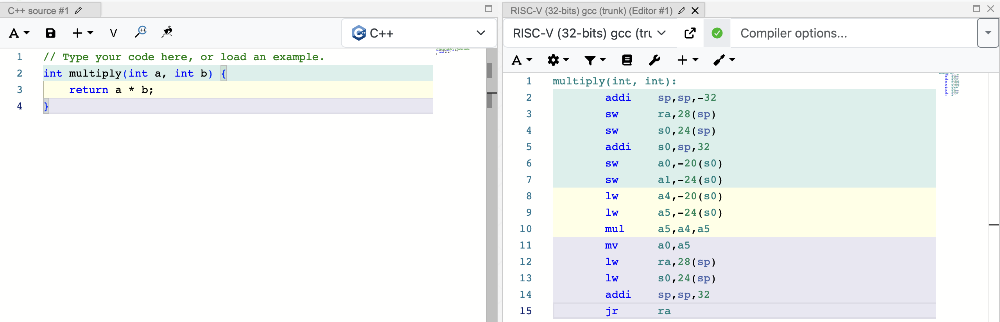
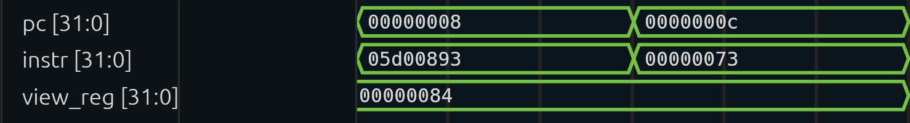

Motivation

While I was relaxing in my senior year at UC Davis after finishing my core Electrical Engineering requirements, I decided to go for a different challenge — this time in the world of software.
I audited ECS 142: Compilers in the Winter Quarter of 2025.
The course began with automata theory (DFA, NFA), lexer, Chomsky hierarchy, top-down and bottom-up parsing to abstract syntax tree (AST), semantic analysis, control flow graph (CFG), and then code generation to intermediate representation (IR). And let's not forget code optimization techniques like loop unrolling. There's also a project component where we use Antlr4 (a parser generator) to build the AST, then type-check the tree and convert it to IR.
What a mouthful 😬, and that was only the frontend of compiler engineering (yes, there's also a backend).
Despite the seemingly complete course material, I noticed that some pieces were missing as I finished the quarter.
In my head, I picture a compiler as the formal translator that transforms a high-level programming language into assembly code such as RISC-V or x86 that a CPU can read and execute after assembling.

Source: https://godbolt.org
However, the course project stopped at the IR level and had tools like LLVM handle the rest of the backend tasks of translating IR to assembly. To an EE person interested in digital systems, it's deeply disappointing to see that the actual bridge to hardware instructions gets automated without hands-on learning first.
Our professor resorted to automation because the source language of our compiler project was quite complex. There were 5 data types, annotations, exceptions, lambdas, structs, unions, and goto, on top of the basics like branches and loops. By the time we were doing type checking, the class was quite fatigued by the volume of material, and we still had CFG and IR to go. As a result, some components became bonus exercises, and it would have been worse if we hadn't automated with Antlr4. In conclusion, the course was too ambitious for its own goals and failed to show students the complete bridge from software to hardware.
However, my desire to bridge software to hardware did not dissipate after graduating from college and finishing tech internships — from a cloud service company to a fabless chip design firm.
About a year after I audited ECS 142, I decided to build a compiler again, but with simplicity and complete language-to-assembly ownership as the priority.
Decisions

Since we are building a compiler, we'll start by designing a toy language for the compiler to take as input. I wanted the toy language to provide the minimum abstraction necessary, so this project could teach me actual assembly code generation in a reasonable amount of time. The full grammar lives in grammar.ebnf if you want the precise EBNF; here I'll just walk through the reasoning behind it.
Here are the main things I wanted to avoid, and their consequences for the toy language and its grammar:
1. No type checking
Why: omit the entire phase of semantic analysis so I could focus on code generation.
Consequences: one integer data type; every function returns an integer.
2. No intermediate representation — straight from AST to assembly
Why: as stated in Motivation, the goal of this project is to discover the bridge between software and hardware myself, so I wanted ownership of AST-to-assembly code generation directly.
Consequences: this made RISC-V a good target choice for me, since I'd studied it in a computer architecture class and already knew what instructions to expect.
3. Complex expressions, kept simple
Why: complex expressions are easy to translate during code generation but make the parser more complicated — in other words, more time diverted to the parser instead of to assembly generation, which is where I actually wanted to spend my time.
Consequences: the language doesn't support multiplication or division, since
they'd add another expression level. It only has two operator levels, with chaining limited
to addition and subtraction rather than comparison, since those have the more practical everyday use case (you're
more likely to want a + b - c than a == b > c).
4. Optimization is optional
Why: assembly generation was the goal, not a fast or optimal program.
Consequences: no control flow graph phase needed, since its primary use case is compiler optimization, which I'd already decided to skip.
However, I did keep function calls and group expressions, even though they introduce real complications — register preservation and calling conventions — during code generation. I thought the complication was worth it, because the whole point of the project is to dig into code generation; it's fine, even desirable, to spend more time there.
On the assembly output side: since I'd already built a
CPU in SystemVerilog that supports
RISCV32I, my initial development goal was to run the generated assembly on that CPU in a
bare-bones iverilog simulation environment. So the target language became
RISCV32I — and several earlier language decisions I'd made purely for simplicity (omitting
multiplication, staying integer-only) turned out to map cleanly onto RISCV32I anyway, since
it doesn't support multiplication or non-integer types either.
It wasn't until I started integration-testing the generated assembly against QEMU's RISC-V simulator that I realized my compiler needed to follow an OS convention at all. Up to that point I'd been generating assembly without a real ABI for exiting or returning values. Eventually I settled on the Linux ABI convention — mainly for simplicity of testing, not because the toy language needed anything Linux-specific.
Process

Scanner
Job: the scanner reads the input program and breaks it into the tokens defined in the grammar.
Implementation: I actually wrote the scanner and part of the parser in Python first, to get a quick idea of how the toy language would actually be processed by a real program. This became a quick iterative design loop that helped me fix inconsistencies in the grammar. Once the grammar matured, I switched over to Rust and continued the rest of development there.
I thought Rust was a better choice than Python for this project because:
-
Rust's
enum(algebraic data type) could model AST node states more concisely than Python's more verbose OOP inheritance. - It's more satisfying to build a compiler that could be shipped as a binary and read directly by a CPU, rather than an interpreted program that requires an interpreter.
Perhaps because of Python's dictionary influence, I built the Rust scanner using a table-driven approach with a blend of match statements, so it's easy to see the keywords at a glance. Each match arm matches the current token and advances the scanner to store that token into a list of tokens.
Source: scanner.rs
Parser
This is where Rust shines — the abstract syntax tree definition in Rust follows the shape
of the grammar file, thanks to its powerful enum.
To convert the list of tokens into an AST, I followed the recursive descent parsing strategy, where there's a parse function for each AST node — sometimes a node variant gets its own parse function if it's too lengthy.
There weren't too many implementation decisions to make here; I was guided by Rust's powerful enum and static analyzer once the AST definition was set. The only real challenge was faithfully implementing the grammar, so the parser accepts valid programs and rejects programs that don't belong to the set of acceptable programs as outlined by the grammar.
Code Generator
About two weeks into the project, I finally reached the code generation section. Here, I discovered I needed a mix of pre-order and in-order traversal to generate the assembly. For example, when visiting the function definition node in the AST, stack allocation code and some internal bookkeeping data structures need to be generated or initialized before recursively visiting the children nodes. On the other hand, generating code for expressions requires post-order traversal, because each variable or integer needs to be loaded into a register before any addition or comparison operation can execute.
Speaking of loading a variable's value into a register in an expression: the easiest way to preserve that value is to spill it to the function's stack frame in data memory, so we don't have to track which register is safe or unsafe to overwrite without liveness analysis. Therefore, the result of every add or comparison instruction would be stored inside the function's stack frame.
However, I wanted to try something more efficient. After drawing out how registers might be allocated for expressions, I realized that the three-level expression tree in my grammar would only ever need three temporary registers.
Therefore, we only need to spill registers to the stack frame when we have a group
expression, where the depth is arbitrarily deep, or during a function call, where the
function parameter registers (a0–a7) might be clobbered by a nested function
call. These temporary registers would be restored to the values they held before the group
or call expression was evaluated.
Source: code_gen.rs
Integration Testing Revealed a Gap in My Understanding
As I finished the basic expressions and function part of code generation, I thought it would be a great idea to do an end-to-end integration test before jumping into branches and loops. However, it revealed a gap in my understanding of compiled assembly — what kind of machine would actually run the assembly, and how would it return the result?
Before this, I pictured a bare-bones, textbook-style CPU reading the generated and assembled assembly line by line until the end of the program, and then I could just peek at the register file or data memory to see the computed value.
That was too manual, and it wouldn't fit into Rust's portable and automated integration
testing framework — cargo test can't peek into a simulation waveform.
Eventually, I settled on calling the RISC-V simulator, qemu-riscv32, in a
Linux environment, to simulate running the assembly in an integration test. Since we're in
a Linux environment, we follow the Linux syscall ABI to exit the program and pass our
output as the exit code from the simulator. For example, this code returns the number 43
via register a0:
The alternative would have been to use a more bare-bones simulator and write my own linker script. But for simplicity, I chose the Linux route, since it mostly abides by conventions at the assembly level — I don't have to look into data memory layout or other machine-specific details. This testing decision also affected the source code: I decided the code generation module should simply target a RISC-V CPU running under a Linux environment.
Source: code_gen_test.rs
Result

Now, our compiler could turn this piece of source code that does non-zero positive number multiplication:
into:
Which is… like an alien language. But! After bolting this assembly into the testbench of my
vanilla CPU and letting iverilog simulate the execution, we have:
12 x 11 = 132, so our CPU behaved just as expected!
If we assume that our RISC-V CPU runs at 30 MHz, or 0.033 microsecond per cycle, then it would've taken roughly 17 microseconds to compute the result!
And the waveform, showing program counter, instruction, and register a0
(x10), confirms the result:

Which matches the disassembled assembly:
We just crossed the bridge from language to CPU register!
Challenges

When I initially tried to run the generated assembly code on my CPU's testbench, the
simulation would always run in an infinite loop. After I stopped the simulation and looked
at the waveform, I found that the instructions always became undefined xxxx
after a few cycles. At the beginning, I suspected my CPU was wrong — that there might be
small bugs in the CPU's arithmetic logic unit.
However, after disassembling the assembly to view the program counter and the instruction side by side while looking at the simulation waveform, I discovered that my CPU was behaving correctly — until a load word instruction. This shifted my focus to data memory, and I eventually found that I'd forgotten to set the stack pointer to the bottom of memory (the highest address), and that the data memory size was too small — around 64 bytes for the program I was testing. Initializing the stack pointer to the highest address and allocating the program more bytes resolved the issue.
It was a memorable challenge because it involved uncertainty across every component I'd built — compiler, CPU, and testbench. Though I'd tested the source modules thoroughly, anything could go wrong in the pipeline from generating assembly to running the machine code, so it was hard to separate the problems at first glance. Luckily, disassembly (and some doses of Claude 🤖) helped me bridge the gap between assembly instructions and register-level detail.
Source: risc-v_cpu
Takeaway

Wasn't it a fun journey? As one of my managers always told me:
Have fun and learn something new every day.
I learned quite a bit about the bridge from software to hardware that I'd missed in ECS 142 — things like the code generation techniques that turn an abstract syntax tree into linear assembly instructions. Moreover, converting the program into actual hardware instructions requires conformity to hardware and firmware reality, like following the RISC-V function call convention and the Linux exit convention, that I otherwise wouldn't have had to care about if I'd stopped at the AST or IR phase.
If one day I want to extend this project into something more substantial, I'd add language features like pointers and manual memory management. I don't want to introduce too much compiler optimization, since LLVM already solves most of that problem well. I think it's best to keep this project naively simple, so we can closely see the software-hardware interaction.
Thanks For Reading!